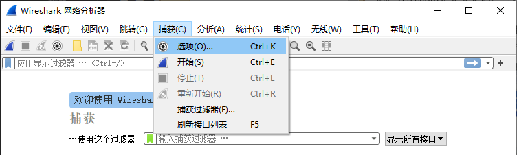
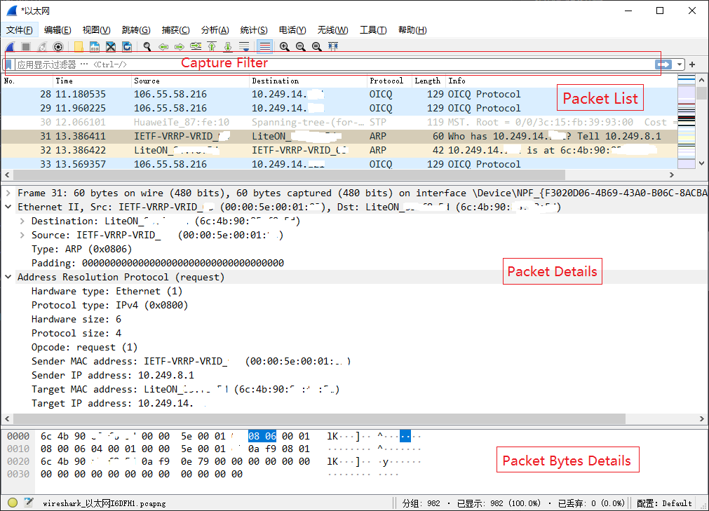

附录 A：Wireshark 入门
Wireshark是最流行的网络嗅探器之一，图形界面非常友好，能在多种平台上抓取和分析网络包，如Windows、Linux和Mac等。在实验中，借助Wireshark直观地显示网络细节，我们可以更快地排除bug发现问题，同时也能让原本拒人千里的网络协议鲜活地呈现在我们面前（更多关于Wireshark的介绍详见参考文献中的《Wireshark网络分析就这么简单》）。
Wireshark安装
实验室电脑安装有Wireshark软件，你可直接使用。如果你想在自己的电脑上安装，可从 https://www.wireshark.org/download.html 免费下载安装包，直接安装即可。
Wireshark使用
Step1 ：启动Wireshark软件，单击菜单栏上的捕获/Capture，再单击选项/interfaces按钮。
Step2 ：此时电脑上的所有网卡都会显示在弹出的新窗口上，选择要抓包的网卡，并单击开始/start按钮。

Step3 ：在Wireshark的菜单栏上，再次单击捕获/Capture，再单击停止/stop按钮。

Step4 ：在Wireshark的菜单栏上，单击文件/File，再单击保存/Save，把网络包保存到电脑上（非必要操作，但随时存档是个好习惯）。
Wireshark分析
如上图所示，Wireshark有三个信息窗口，最上面是Packet List窗口，它列出了所有网络包。在Packet List中选定的网络包会显示在中间的Packet Details窗口中。上图中选定的是31号包，所以看到的是31号包的详情。最底下是Packet Bytes Details窗口，显示了这个包的所有字节。
下面对选定的31号包（ARP请求报文）进行分析。
Packet List窗口中，Source栏显示的是该报文的源MAC地址，Destination栏显示的是目的MAC地址，Protocol栏是ARP协议，该报文长度是60字节，Info栏是Wireshark软件对该报文的一种解读，从图上可知，wireshark给出的解读是“谁有10.249.14.XX的MAC地址？请告诉10.249.8.1。”
Packet Details窗口中，Ethernet II显示的是数据链路层MAC头部信息，有Destination、Source、Type。其中，Type是0x0806，即为ARP报文。Address Resolution Protocol（request）显示的是ARP报文内容，可根据ARP报文格式进一步分析。
Packet Bytes Details窗口中，显示的是这个报文的所有字节信息，以16进制显示。
一些技巧
包过滤
电脑上的网络连接可能非常多，Wireshark抓包时显示了很多我们不需要的包，此时，我们就可以用包过滤功能来过滤掉不需要的包。例如，当我们只关注ARP协议的包时，可以在Capture Filter上输入arp，回车，Packet List窗口就只显示ARP相关的包。如果同时对arp和ip协议感兴趣，可以输入arp || ip。如果只对IP为10.249.8.1的包感兴趣，输入ip.addr == 10.249.8.1即可。
更多的filter表达式，请参考 https://wiki.wireshark.org/CaptureFilters。